1Installer l'application
Boutique Facile s'installe depuis son lien, sans passer par un magasin d'applications.
https://devotionobstine-dev.github.io/Boutique-Facile/
Sur Android
- Ouvrez le lien dans Chrome.
- Touchez Installer l'application. Si le bouton n'apparaît pas : menu ⋮, puis Ajouter à l'écran d'accueil.
- Ouvrez Boutique Facile depuis l'écran d'accueil.
Sur iPhone
- Ouvrez le lien dans Safari.
- Touchez Partager, puis Sur l'écran d'accueil.
- Ouvrez Boutique Facile depuis l'écran d'accueil.
Après la première ouverture, l'application marche sans internet.
2Premier démarrage
- Créez votre code PIN à 4 chiffres. C'est le code du patron : il ouvre l'application et autorise les actions sensibles.
- Notez le code de secours à 8 chiffres sur papier. Il n'est affiché qu'une fois. Il sert si vous oubliez votre code PIN.
- Présentez votre commerce : nom, type de commerce, téléphone. Choisissez de commencer avec un stock vide ou d'essayer avec des produits d'exemple.
Choisir « Pharmacie » active le suivi des lots, des dates de péremption et des ordonnances.
Quand l'application reste fermée plus de 2 minutes, elle redemande le code. Le cadenas en haut à droite la verrouille tout de suite.
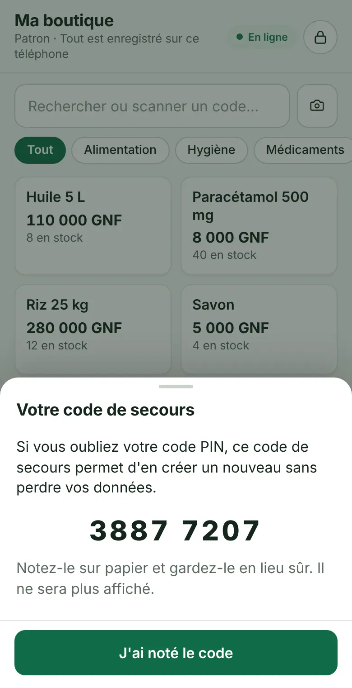
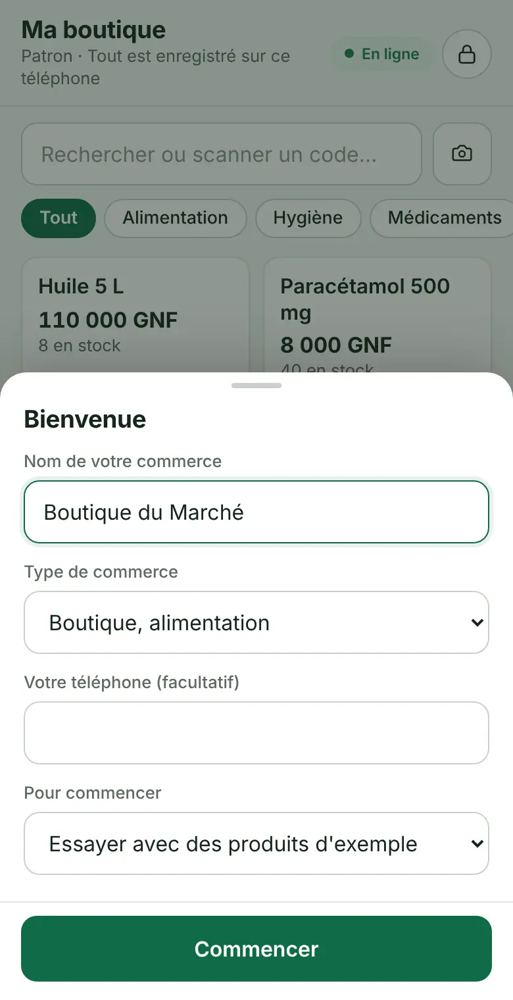
3Vendre
- Touchez un produit pour en ajouter un au panier. Restez appuyé pour taper une quantité ou choisir un format (carton, boîte…).
- Touchez le mode de paiement : Espèces, Mobile Money ou À crédit.
- Tapez ce que le client donne. La monnaie à rendre s'affiche. Les gros billets les plus probables sont proposés en un geste.
- Touchez Valider la vente. Le stock est mis à jour et le client suivant peut être servi.
Pendant la vente
- Dans le panier, touchez un article pour en retirer un. ✎ Modifier change la quantité ou le prix (prix négocié).
- Mettre en attente met le panier de côté pour servir un autre client. Touchez-le en haut de l'écran pour le reprendre.
- + Remise accorde une remise en % ou en GNF. Au-delà de la limite fixée dans les Réglages, le code du patron est demandé.
- Si le client donne moins que le total, choisissez où va le reste : à crédit, Orange Money, MTN MoMo. Répartir autrement permet de mélanger les paiements.
- Mobile Money : vous pouvez noter le numéro de transaction ou coller le SMS reçu. L'application vérifie le montant et signale un numéro déjà utilisé.
- Codes-barres : tapez le code, utilisez une douchette, ou touchez l'appareil photo à côté de la recherche.
Après la vente
Une barre en bas rappelle la monnaie à rendre. Reçu envoie le reçu par WhatsApp ou SMS, ou l'imprime. Annuler défait la vente pendant 5 minutes ; plus tard, passez par Plus › Ventes (code du patron).
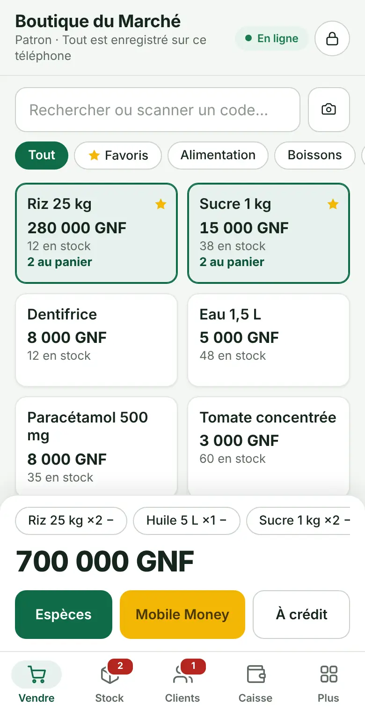
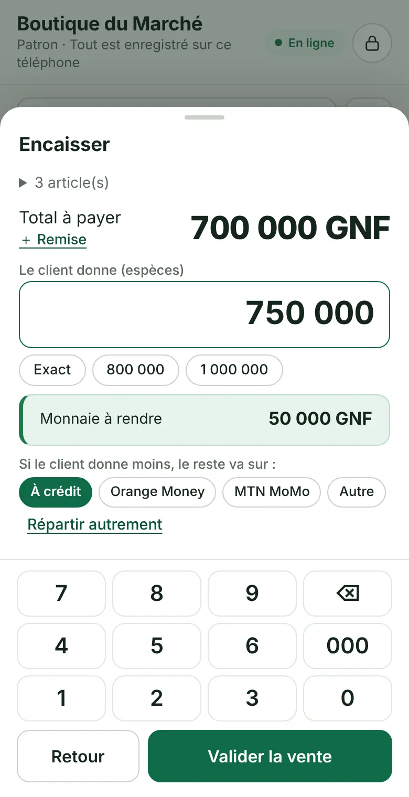
4Ventes à crédit et dettes
- Dans le panier, touchez À crédit.
- Écrivez le nom du client ou touchez un client récent. Ajoutez son téléphone et la date d'échéance.
- Si le client paie une partie maintenant, tapez-la : le reste devient sa dette.
La pièce d'identité et sa photo sont facultatives. Elles ne sont enregistrées que si vous cochez l'accord du client.
Onglet Clients
- Le total que les clients vous doivent est en haut. Les retards sont en rouge.
- Encaisser : notez un paiement (espèces, Orange Money, MTN MoMo). L'application propose d'envoyer un reçu.
- Relancer : un message poli est déjà écrit, vous l'envoyez par WhatsApp ou SMS.
- Dans la fiche du client, fixez un plafond de crédit. Au-delà, le code du patron est demandé.

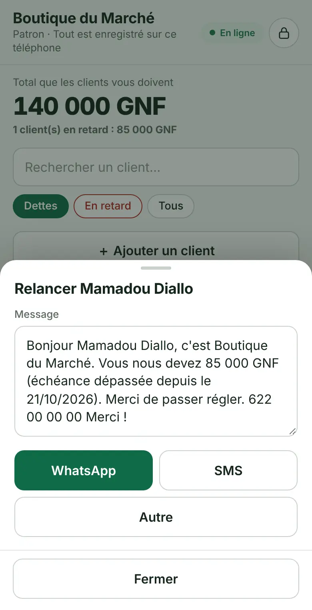
5Le stock
Ajouter un produit
- Onglet Stock, + Ajouter un produit.
- Nom, prix d'achat, prix de vente et quantité en stock.
- Enregistrer.
« Plus d'options » ajoute un code-barres, un prix de gros, des formats (carton, boîte), le seuil d'alerte, le fournisseur.
Faire vivre le stock
- + Stock enregistre la marchandise reçue (un achat). Le prix d'achat moyen se recalcule.
- Modifier › Corriger le stock : tapez la quantité comptée et le motif (casse, vol, périmé…).
- Inventaire : comptez les étagères, l'application montre les écarts avant de les appliquer.
- Prix en bloc : augmentez une catégorie de quelques %, avec retour arrière possible.
- À recommander : les quantités proposées couvrent environ deux semaines de ventes. La commande part au fournisseur par WhatsApp.
Seul le patron peut modifier le stock et les prix.
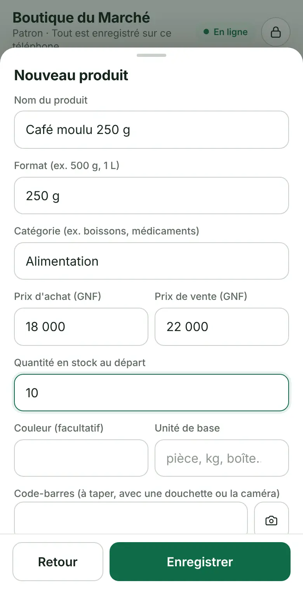

6La caisse du jour
- Le matin, onglet Caisse, Ouvrir la caisse : notez l'argent du tiroir et vos soldes Orange Money et MTN MoMo.
- Dans la journée, vendez normalement. Notez les dépenses avec Dépense (loyer, transport, électricité…).
- Le soir, Clôturer la caisse : comptez l'argent. L'application compare avec ce qui est attendu et montre l'écart.
Envoyer le résumé du jour partage les ventes, les paiements et les produits à recommander par WhatsApp.
Dans les Réglages, vous pouvez obliger à ouvrir la caisse avant de vendre. Le module « Agent Mobile Money » suit aussi les dépôts, retraits et commissions.
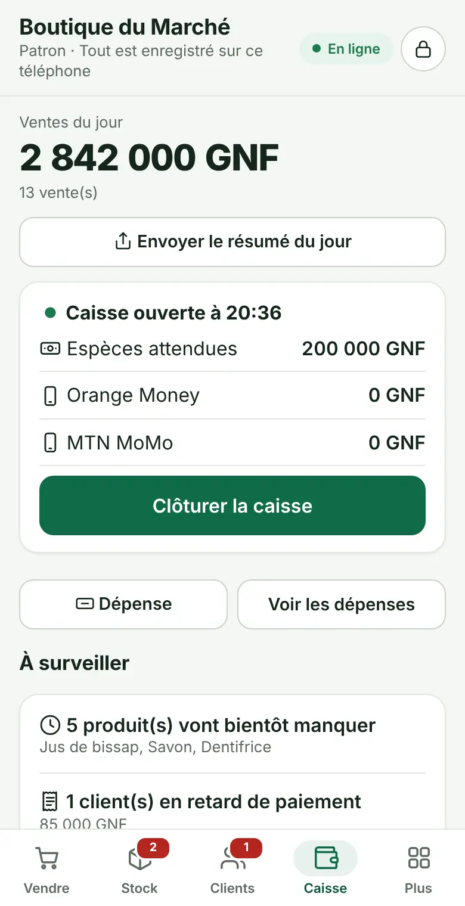

7Vendeurs et codes
- Plus › Vendeurs et codes.
- + Ajouter un vendeur : son nom et un code à 4 chiffres, différent du vôtre.
- Le vendeur ouvre l'application avec son code. Ses ventes sont notées à son nom.
Un vendeur peut vendre, encaisser une dette, voir ses propres ventes et ouvrir ou fermer sa caisse. Il ne voit pas les prix d'achat ni les bénéfices, sauf si vous l'autorisez.
Une remise trop forte, un retour, une annulation ou un dépassement de crédit demandent le code du patron.
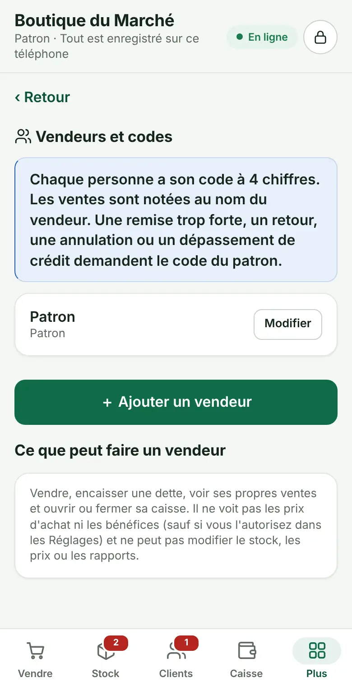
8La sauvegarde
Vos données sont uniquement sur ce téléphone. S'il est perdu, volé ou cassé, seule une sauvegarde permet de tout retrouver.
- Plus › Sauvegarde et mémoire.
- Facultatif : un mot de passe pour protéger le fichier. Notez-le, il ne peut pas être retrouvé.
- Sauvegarder maintenant, puis envoyez le fichier dans WhatsApp (à vous-même), par e-mail ou dans Google Drive.
Sur un nouveau téléphone
Installez l'application, puis Plus › Sauvegarde et mémoire › Restaurer une sauvegarde et choisissez le fichier.
Faites une sauvegarde chaque semaine. L'application vous le rappelle après 7 jours.
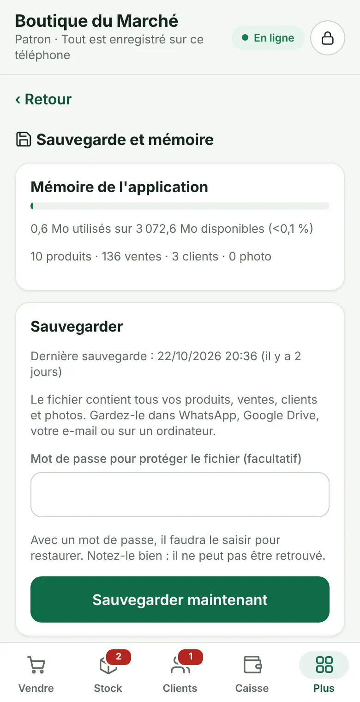
9Rapports et conseils
- Rapports : ventes, marge, bénéfice estimé, produits les plus vendus, heures de vente, par jour, semaine, mois ou année.
- Conseiller : produits qui vont manquer, stock qui ne bouge pas, ventes sous le prix d'achat, clients en retard, écarts de caisse.
- Comptabilité : résultat, livre de caisse, situation, et fichiers Excel (CSV) pour le comptable.
- Dossier pour une banque : une page avec vos chiffres des 3, 6 ou 12 derniers mois, à imprimer.
Ces chiffres sont calculés avec ce que vous saisissez. Faites-les valider par un comptable avant une déclaration.
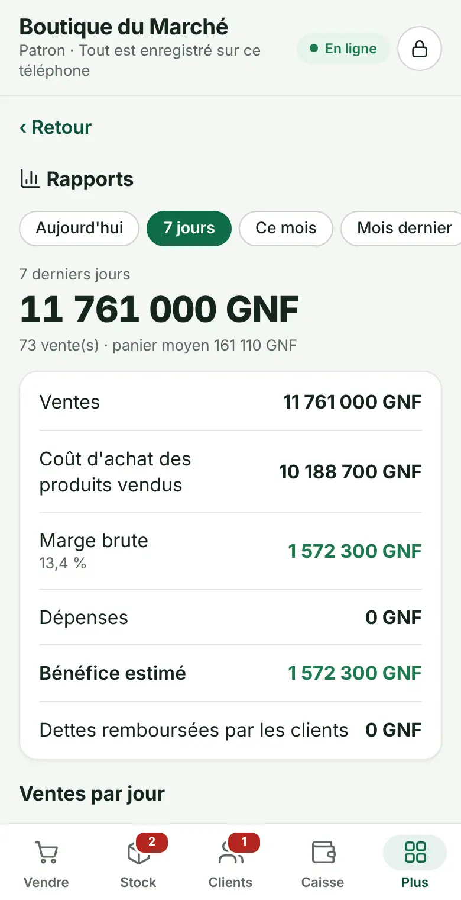
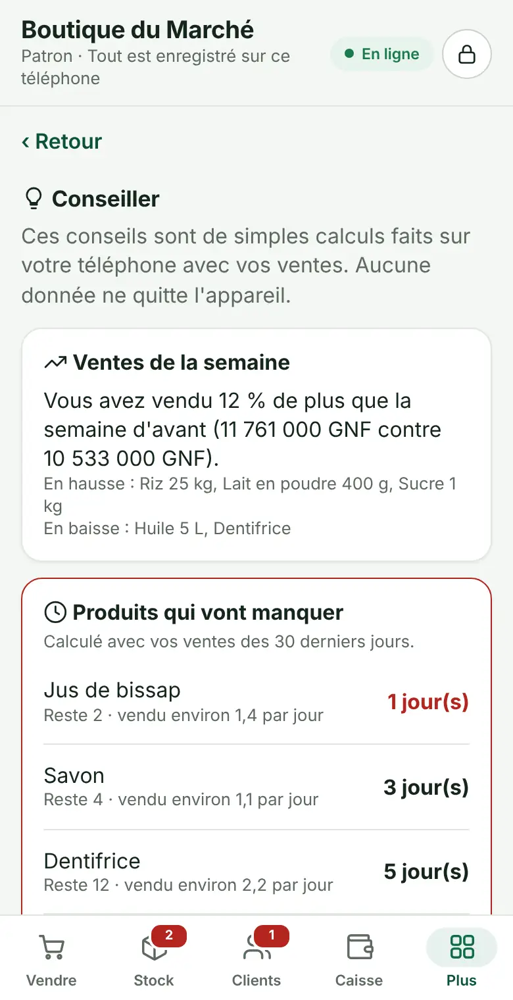
10En cas de souci
J'ai oublié mon code PIN
Sur l'écran du code, touchez « Code oublié ? » et tapez le code de secours à 8 chiffres. Vous créez ensuite un nouveau code, sans perdre vos données.
J'ai perdu le code de secours aussi
Il faut réinstaller l'application puis restaurer votre dernière sauvegarde. D'où l'importance de la sauvegarde hebdomadaire.
Le message « Vos données n'ont pas pu être lues » s'affiche
Le téléphone n'a pas réussi à lire la mémoire. Rien n'est effacé et rien n'est écrit tant que le problème dure. Fermez complètement l'application et rouvrez-la. Si cela continue, redémarrez le téléphone ou restaurez une sauvegarde.
Un bandeau rouge dit que les données ne sont pas enregistrées
La mémoire du téléphone est pleine ou bloquée. Faites une sauvegarde tout de suite, puis libérez de la place (photos, vidéos).
« Une nouvelle version est prête »
Fermez l'application et rouvrez-la pour utiliser la nouvelle version. Vos données restent en place.
Je me suis trompé dans une vente
Juste après la vente, touchez « Annuler » dans la barre du bas. Plus tard : Plus › Ventes, touchez la vente, puis « Annuler la vente » ou « Retour / échange » (code du patron).
Je veux l'application dans ma langue
Plus › Langue › Ajouter une langue. Les textes se traduisent un par un, ou par un fichier que vous faites remplir par un proche puis importez.